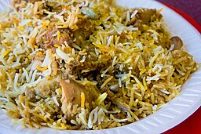

Recipe Biryani

Pic Credits: Garrett Ziegler
Description
Biryani is a fragrant,
one-pot rice dish made by layering marinated meat (or vegetables)
with parboiled basmati rice, spices, herbs, and caramelized onions.
The pot is sealed and slow-cooked using the "dum" method, allowing
the meat to tenderize and the rice to absorb the rich aromatic flavors.
Ingredients
- Chicken: 500g-1kg, cut into pieces
- Rice: 1.5-2 cups Basmati rice(soak for 30 mins)
- Marinade: 1/2 cup plain yogurt,
1 tbsp ginger-garlic paste,
1 tbsp turmeric,
1-2 tsp red chilli powder,
1 tsp garam masala,
lemon juice, salt.
- Aromatics/Garnish : 3-4 large onions,
1 cup fresh mint leaves,
1 cup fresh coriander leaves,
2-3 green chilllies.
- Whole Spices: 2 bay leaves,
4 green cardamoms,
1 black cardamoms,
4 cloves,
1 cinnamon stick,
1 tsp cumin seeds.
- Cooking Liquid :
1/2 cup ghee or oil,
3-4 cups water,
1/4 cup milk mixed with saffron threads.
Steps to Cook
- Marinate Chicken:
Mix chicken with yogurt, spices,
lemon juice, half of the fried onions,
mint, coriander, and ginger-garlic paste.
Marinate for at least 30 minutes to overnight.
- Fry Onions:
Thinly slice onions and fry them in ghee until golden brown and crispy.
Set aside
- Prepare Rice:
Bring water to a boil with whole spices (bay leaf, cardamom, etc.)
and salt. Add soaked rice and cook until 70-80% done (firm but cooked).
Drain and set aside.
- Cook Chicken:
In a heavy-bottomed pot, heat ghee, add remaining aromatics,
then add the marinated chicken.
Cook for 10-15 minutes until the oil separates and
chicken is nearly done.
- Layering:
Reduce heat. Top the chicken with a layer of fried onions,
mint, and coriander. Add the cooked rice,
then top with saffron milk, remaining fried onions,
and a drizzle of ghee.
- Dum Cooking:
Seal the pot with a tight lid (or aluminum foil/dough).
Cook on low heat for 15-20 minutes, or
place the pot on a hot tawa (griddle) to prevent burning.
- Rest and Serve:
Turn off the heat and let it rest for 10 minutes before serving.
Gently mix from the bottom when serving.
Home